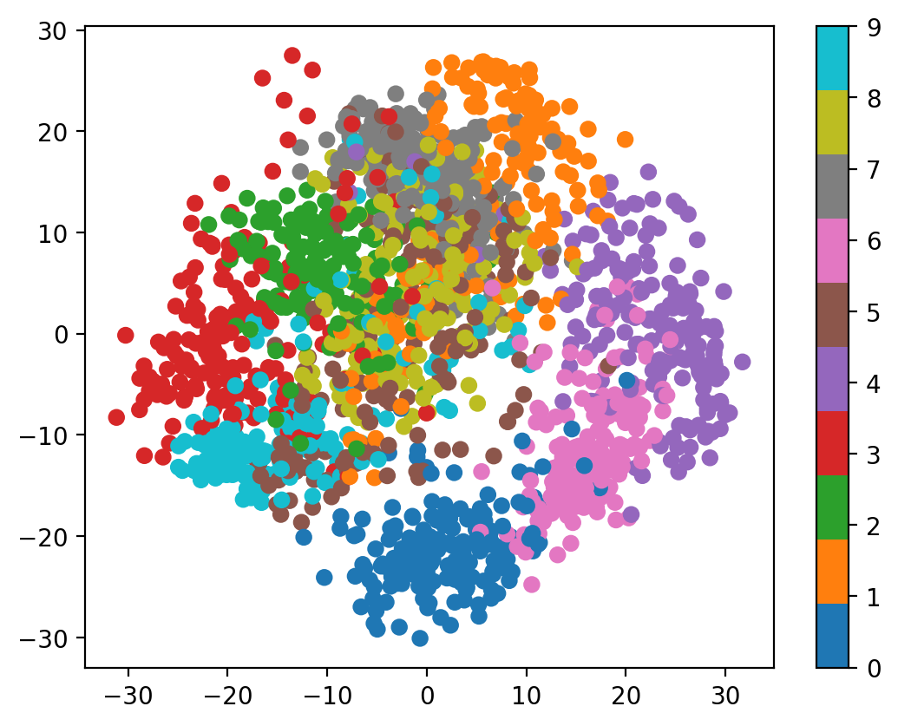

import matplotlib.pyplot as plt
import numpy as np
print(np.__version__)
import torch
import torch.nn as nn
import pandas as pd
# Retina mode
%matplotlib inline
%config InlineBackend.figure_format = 'retina'2.2.4joint distributions, PCA, dimensionality reduction, image analysis, scikit-learn, digits dataset
import matplotlib.pyplot as plt
import numpy as np
print(np.__version__)
import torch
import torch.nn as nn
import pandas as pd
# Retina mode
%matplotlib inline
%config InlineBackend.figure_format = 'retina'2.2.4Joint distributions describe the probability behavior of multiple random variables simultaneously. In this notebook, we explore joint distributions through the lens of high-dimensional image data, demonstrating how techniques like Principal Component Analysis (PCA) help us understand and visualize joint probability structures in complex datasets.
When dealing with image data, each pixel can be thought of as a random variable, and the entire image represents a realization from a high-dimensional joint distribution. Understanding these joint structures is crucial for:
By the end of this notebook, you will be able to:
For random variables \(X_1, X_2, \ldots, X_p\), the joint distribution describes their collective probabilistic behavior. The joint probability density function (PDF) is:
\[f_{X_1,\ldots,X_p}(x_1, \ldots, x_p)\]
This function gives the probability density at any point \((x_1, \ldots, x_p)\) in the \(p\)-dimensional space.
Marginal Distributions: \(f_{X_i}(x_i) = \int \cdots \int f_{X_1,\ldots,X_p}(x_1, \ldots, x_p) dx_1 \cdots dx_{i-1} dx_{i+1} \cdots dx_p\)
Independence: Variables are independent if \(f_{X_1,\ldots,X_p}(x_1, \ldots, x_p) = \prod_{i=1}^p f_{X_i}(x_i)\)
Covariance Structure: \(\text{Cov}(X_i, X_j) = E[(X_i - \mu_i)(X_j - \mu_j)]\)
PCA finds the directions of maximum variance in a joint distribution. For a multivariate dataset with covariance matrix \(\Sigma\):
PCA essentially rotates the coordinate system to align with the natural axes of the joint distribution.
We’ll use the digits dataset, where each image is an 8×8 pixel grid. This gives us 64-dimensional data points, representing samples from a 64-dimensional joint distribution.
from sklearn.datasets import load_digitsData Interpretation: - X.shape = (1797, 64): We have 1,797 samples from a 64-dimensional joint distribution - Each row represents one realization from this joint distribution
- Each column represents one random variable (pixel intensity) - The joint distribution captures how all 64 pixels co-vary across different digit images
# Visualize several samples from our joint distribution
fig, axes = plt.subplots(2, 5, figsize=(12, 6))
axes = axes.ravel()
for i in range(10):
# Each image is a sample from the 64-dimensional joint distribution
sample_idx = i * 180 # Spread out the examples
image = X[sample_idx].reshape(8, 8)
axes[i].imshow(image, cmap='gray')
axes[i].set_title(f'Digit: {y[sample_idx]}\nSample #{sample_idx}')
axes[i].axis('off')
plt.suptitle('Individual Samples from the 64-Dimensional Joint Distribution', fontsize=14)
plt.tight_layout()
plt.show()
# Show the actual 64-dimensional vector for one sample
print(f"Sample {sample_idx} as 64-dimensional vector:")
print(f"First 10 values: {X[sample_idx][:10]}")
print(f"Range: [{X[sample_idx].min():.1f}, {X[sample_idx].max():.1f}]")
print(f"Mean: {X[sample_idx].mean():.2f}, Std: {X[sample_idx].std():.2f}")# Analyze marginal distributions of pixels
fig, axes = plt.subplots(2, 3, figsize=(15, 8))
# 1. Mean image (expected value of the joint distribution)
mean_image = X.mean(axis=0).reshape(8, 8)
axes[0, 0].imshow(mean_image, cmap='gray')
axes[0, 0].set_title('Mean Image\n(Expected Value)')
axes[0, 0].axis('off')
# 2. Standard deviation image (marginal variances)
std_image = X.std(axis=0).reshape(8, 8)
axes[0, 1].imshow(std_image, cmap='hot')
axes[0, 1].set_title('Standard Deviation per Pixel\n(Marginal Variances)')
axes[0, 1].axis('off')
# 3. Sample of marginal distributions
pixel_indices = [10, 28, 35, 50] # Different pixel positions
for i, px_idx in enumerate(pixel_indices):
if i < 2:
ax = axes[0, 2]
else:
ax = axes[1, 2]
ax.hist(X[:, px_idx], bins=30, alpha=0.7, density=True,
label=f'Pixel {px_idx}')
axes[0, 2].set_title('Marginal Distributions\nof Selected Pixels')
axes[0, 2].set_xlabel('Pixel Intensity')
axes[0, 2].set_ylabel('Density')
axes[0, 2].legend()
axes[1, 2].set_xlabel('Pixel Intensity')
axes[1, 2].set_ylabel('Density')
axes[1, 2].legend()
# 4. Pixel correlation analysis
# Sample a few pixels to show correlation
sample_pixels = [20, 21, 28, 29] # Adjacent pixels
pixel_data = X[:, sample_pixels]
correlation_matrix = np.corrcoef(pixel_data.T)
im = axes[1, 0].imshow(correlation_matrix, cmap='coolwarm', vmin=-1, vmax=1)
axes[1, 0].set_title('Correlation Matrix\n(Sample Adjacent Pixels)')
axes[1, 0].set_xticks(range(len(sample_pixels)))
axes[1, 0].set_yticks(range(len(sample_pixels)))
axes[1, 0].set_xticklabels([f'Px{i}' for i in sample_pixels])
axes[1, 0].set_yticklabels([f'Px{i}' for i in sample_pixels])
plt.colorbar(im, ax=axes[1, 0])
# 5. Scatter plot showing dependence
axes[1, 1].scatter(X[:, 20], X[:, 21], alpha=0.3, s=10)
axes[1, 1].set_title('Pixel 20 vs Pixel 21\n(Adjacent Pixels)')
axes[1, 1].set_xlabel('Pixel 20 Intensity')
axes[1, 1].set_ylabel('Pixel 21 Intensity')
axes[1, 1].grid(True, alpha=0.3)
plt.tight_layout()
plt.show()
print("Joint Distribution Properties:")
print(f"- Dimensionality: {X.shape[1]} (each sample is 64-dimensional)")
print(f"- Sample size: {X.shape[0]} realizations")
print(f"- Mean pixel intensity: {X.mean():.2f}")
print(f"- Overall variance: {X.var():.2f}")
print(f"- Range: [{X.min():.1f}, {X.max():.1f}]")
print(f"- Correlation between adjacent pixels (20,21): {np.corrcoef(X[:, 20], X[:, 21])[0,1]:.3f}")PCA helps us understand the joint distribution by finding the directions of maximum variance. These directions reveal the underlying structure of how the 64 pixel intensities co-vary.
High-Dimensional Reality: Real data often lives in high-dimensional spaces (64D for 8×8 images), but the effective dimensionality can be much lower
PCA Reveals Structure: Principal Component Analysis uncovers the underlying structure of joint distributions by finding directions of maximum variance
Covariance is Key: The joint distribution’s covariance matrix completely determines the PCA transformation - they are mathematically equivalent
Dimensionality Reduction: Most of the information in a 64-dimensional joint distribution can be captured in just a few principal components
Visual Interpretation: We can visualize complex joint distributions by projecting to 2D or 3D spaces
This analysis demonstrates how abstract concepts like joint distributions become concrete and actionable through computational tools like PCA, bridging probability theory with practical data analysis.
# Explore the relationship between PCA and covariance structure
from sklearn.covariance import EmpiricalCovariance
# Compute sample covariance matrix
cov_estimator = EmpiricalCovariance()
cov_matrix = cov_estimator.fit(X).covariance_
# Compare with PCA eigendecomposition
eigenvals, eigenvecs = np.linalg.eigh(cov_matrix)
# Sort in descending order (like PCA)
idx = np.argsort(eigenvals)[::-1]
eigenvals = eigenvals[idx]
eigenvecs = eigenvecs[:, idx]
# Create visualization
fig, axes = plt.subplots(2, 3, figsize=(15, 10))
# 1. Covariance matrix
im1 = axes[0, 0].imshow(cov_matrix, cmap='coolwarm')
axes[0, 0].set_title('Sample Covariance Matrix\n(64×64)')
axes[0, 0].set_xlabel('Pixel Index')
axes[0, 0].set_ylabel('Pixel Index')
plt.colorbar(im1, ax=axes[0, 0])
# 2. Eigenvalues comparison
axes[0, 1].plot(range(1, 11), eigenvals[:10], 'bo-', label='Covariance Eigenvalues')
axes[0, 1].plot(range(1, 11), pca_detailed.explained_variance_, 'ro-', label='PCA Eigenvalues')
axes[0, 1].set_title('Eigenvalues Comparison')
axes[0, 1].set_xlabel('Component')
axes[0, 1].set_ylabel('Eigenvalue')
axes[0, 1].legend()
axes[0, 1].grid(True)
# 3. Eigenvector comparison (first PC)
axes[0, 2].plot(eigenvecs[:, 0], 'b-', label='Cov. Eigenvector 1')
axes[0, 2].plot(pca_detailed.components_[0], 'r--', label='PCA Component 1')
axes[0, 2].set_title('First Principal Component\n(Eigenvector Comparison)')
axes[0, 2].set_xlabel('Pixel Index')
axes[0, 2].set_ylabel('Component Weight')
axes[0, 2].legend()
axes[0, 2].grid(True)
# 4. Correlation matrix (easier to interpret)
correlation_matrix = np.corrcoef(X.T)
im2 = axes[1, 0].imshow(correlation_matrix, cmap='coolwarm', vmin=-1, vmax=1)
axes[1, 0].set_title('Sample Correlation Matrix\n(64×64)')
axes[1, 0].set_xlabel('Pixel Index')
axes[1, 0].set_ylabel('Pixel Index')
plt.colorbar(im2, ax=axes[1, 0])
# 5. Local correlation structure (show 8x8 spatial structure)
# Reshape correlation matrix to show spatial structure
spatial_corr = np.zeros((8, 8))
center_pixel = 28 # Middle-ish pixel
for i in range(64):
row, col = i // 8, i % 8
spatial_corr[row, col] = correlation_matrix[center_pixel, i]
im3 = axes[1, 1].imshow(spatial_corr, cmap='coolwarm', vmin=-1, vmax=1)
axes[1, 1].set_title(f'Correlation with Pixel {center_pixel}\n(Spatial Layout)')
plt.colorbar(im3, ax=axes[1, 1])
# 6. Distribution of correlations
axes[1, 2].hist(correlation_matrix[np.triu_indices_from(correlation_matrix, k=1)],
bins=50, alpha=0.7, density=True)
axes[1, 2].set_title('Distribution of Pairwise\nPixel Correlations')
axes[1, 2].set_xlabel('Correlation Coefficient')
axes[1, 2].set_ylabel('Density')
axes[1, 2].axvline(0, color='red', linestyle='--', alpha=0.7)
axes[1, 2].grid(True, alpha=0.3)
plt.tight_layout()
plt.show()
# Statistical summary
print("COVARIANCE STRUCTURE ANALYSIS:")
print("="*40)
print(f"Covariance matrix shape: {cov_matrix.shape}")
print(f"Covariance matrix rank: {np.linalg.matrix_rank(cov_matrix)}")
print(f"Trace (total variance): {np.trace(cov_matrix):.2f}")
print(f"Maximum correlation: {correlation_matrix[correlation_matrix < 1].max():.3f}")
print(f"Minimum correlation: {correlation_matrix.min():.3f}")
print(f"Mean absolute correlation: {np.abs(correlation_matrix[np.triu_indices_from(correlation_matrix, k=1)]).mean():.3f}")
print("\nPROOF THAT PCA = COVARIANCE EIGENDECOMPOSITION:")
print("="*50)
print(f"Eigenvalue difference (should be ~0): {np.max(np.abs(eigenvals[:10] - pca_detailed.explained_variance_)):.2e}")
print(f"Eigenvector difference (should be ~0): {np.max(np.abs(np.abs(eigenvecs[:, 0]) - np.abs(pca_detailed.components_[0]))):.2e}")
print("\n✓ PCA components are eigenvectors of the covariance matrix!")
print("✓ PCA eigenvalues are eigenvalues of the covariance matrix!")The principal components are directly related to the covariance structure of our joint distribution:
# Detailed PCA Analysis
pca_detailed = PCA(n_components=10) # Get more components for analysis
X_reduced_detailed = pca_detailed.fit_transform(X)
# Create comprehensive visualization
fig = plt.figure(figsize=(16, 12))
# 1. Explained variance ratio
ax1 = plt.subplot(3, 4, 1)
plt.bar(range(10), pca_detailed.explained_variance_ratio_)
plt.title('Explained Variance Ratio\nby Principal Component')
plt.xlabel('Component')
plt.ylabel('Variance Ratio')
plt.xticks(range(10))
# 2. Cumulative explained variance
ax2 = plt.subplot(3, 4, 2)
cumsum_var = np.cumsum(pca_detailed.explained_variance_ratio_)
plt.plot(range(10), cumsum_var, 'bo-')
plt.title('Cumulative Explained Variance')
plt.xlabel('Number of Components')
plt.ylabel('Cumulative Variance Ratio')
plt.grid(True)
# 3-6. First 4 principal components as images
for i in range(4):
ax = plt.subplot(3, 4, 3 + i)
component_image = pca_detailed.components_[i].reshape(8, 8)
plt.imshow(component_image, cmap='RdBu_r')
plt.title(f'PC{i+1}\n(Var: {pca_detailed.explained_variance_ratio_[i]:.3f})')
plt.axis('off')
plt.colorbar(shrink=0.6)
# 7. 2D projection colored by digit
ax7 = plt.subplot(3, 4, 7)
scatter = plt.scatter(X_reduced_detailed[:, 0], X_reduced_detailed[:, 1],
c=y, cmap='tab10', alpha=0.6, s=10)
plt.title('Joint Distribution Projection\n(First 2 PCs)')
plt.xlabel('PC1')
plt.ylabel('PC2')
plt.colorbar(scatter, shrink=0.6)
# 8. Different PC pairs
ax8 = plt.subplot(3, 4, 8)
plt.scatter(X_reduced_detailed[:, 2], X_reduced_detailed[:, 3],
c=y, cmap='tab10', alpha=0.6, s=10)
plt.title('Joint Distribution Projection\n(PC3 vs PC4)')
plt.xlabel('PC3')
plt.ylabel('PC4')
# 9. Reconstruction demonstration
ax9 = plt.subplot(3, 4, 9)
# Original image
original_idx = 100
original_image = X[original_idx].reshape(8, 8)
plt.imshow(original_image, cmap='gray')
plt.title(f'Original\n(Digit {y[original_idx]})')
plt.axis('off')
# 10. Reconstruction with 2 components
ax10 = plt.subplot(3, 4, 10)
pca_2 = PCA(n_components=2)
X_2d = pca_2.fit_transform(X)
X_reconstructed_2 = pca_2.inverse_transform(X_2d)
reconstructed_image_2 = X_reconstructed_2[original_idx].reshape(8, 8)
plt.imshow(reconstructed_image_2, cmap='gray')
plt.title('2-PC Reconstruction')
plt.axis('off')
# 11. Reconstruction with 5 components
ax11 = plt.subplot(3, 4, 11)
pca_5 = PCA(n_components=5)
X_5d = pca_5.fit_transform(X)
X_reconstructed_5 = pca_5.inverse_transform(X_5d)
reconstructed_image_5 = X_reconstructed_5[original_idx].reshape(8, 8)
plt.imshow(reconstructed_image_5, cmap='gray')
plt.title('5-PC Reconstruction')
plt.axis('off')
# 12. Reconstruction error analysis
ax12 = plt.subplot(3, 4, 12)
n_components_range = range(1, 21)
reconstruction_errors = []
for n_comp in n_components_range:
pca_temp = PCA(n_components=n_comp)
X_temp = pca_temp.fit_transform(X)
X_recon_temp = pca_temp.inverse_transform(X_temp)
error = np.mean((X - X_recon_temp) ** 2)
reconstruction_errors.append(error)
plt.plot(n_components_range, reconstruction_errors, 'ro-')
plt.title('Reconstruction Error\nvs Number of Components')
plt.xlabel('Number of Components')
plt.ylabel('Mean Squared Error')
plt.grid(True)
plt.tight_layout()
plt.show()
# Print summary statistics
print("JOINT DISTRIBUTION ANALYSIS SUMMARY:")
print("="*50)
print(f"Original dimensionality: {X.shape[1]}")
print(f"Number of samples: {X.shape[0]}")
print(f"First 2 PCs explain {cumsum_var[1]:.1%} of total variance")
print(f"First 5 PCs explain {cumsum_var[4]:.1%} of total variance")
print(f"First 10 PCs explain {cumsum_var[9]:.1%} of total variance")
print(f"\nThis means the 64-dimensional joint distribution has most of its")
print(f"structure captured in just a few principal directions!")
print(f"\nReconstruction Quality:")
print(f"- 2 components: MSE = {reconstruction_errors[1]:.3f}")
print(f"- 5 components: MSE = {reconstruction_errors[4]:.3f}")
print(f"- 10 components: MSE = {reconstruction_errors[9]:.3f}")Let’s explore this in more detail by analyzing the principal components and their relationship to the joint distribution:
Understanding the PCA Results:
The scatter plot shows how the 64-dimensional samples project onto the first two principal components, revealing the underlying structure of the joint distribution.
Before applying PCA, let’s examine the marginal distributions - how individual pixels (random variables) behave across all samples.
Let’s examine individual realizations from our 64-dimensional joint distribution:
X, y = load_digits(return_X_y=True)
X = X.astype(np.float32)
y = y.astype(np.int64)
print(X.shape, y.shape)(1797, 64) (1797,)X[0], y[0](array([ 0., 0., 5., 13., 9., 1., 0., 0., 0., 0., 13., 15., 10.,
15., 5., 0., 0., 3., 15., 2., 0., 11., 8., 0., 0., 4.,
12., 0., 0., 8., 8., 0., 0., 5., 8., 0., 0., 9., 8.,
0., 0., 4., 11., 0., 1., 12., 7., 0., 0., 2., 14., 5.,
10., 12., 0., 0., 0., 0., 6., 13., 10., 0., 0., 0.],
dtype=float32),
np.int64(0))dig = 10
plt.imshow(X[dig].reshape(8, 8), cmap='gray')
plt.title(f'Target: {y[dig]}')Text(0.5, 1.0, 'Target: 0')
# Using PCA to reduce the dimensionality of the data to 2d
from sklearn.decomposition import PCA
pca = PCA(n_components=2)
X_reduced = pca.fit_transform(X)
print(X_reduced.shape)(1797, 2)# Plotting the reduced data
plt.scatter(X_reduced[:, 0], X_reduced[:, 1], c=y, cmap='tab10')
plt.colorbar()